Artículos y otros trabajos en periodismo

Foto por Elea Franco
Abocada principalmente al ensayo y al periodismo cultural feminista, su foco está puesto sobre la producción artística contemporánea y el rol de la cultura masiva a la hora del desarrollo de nosotrxs mismxs como sujetxs.
Textos en primera persona sobre el amor en Indiehoy
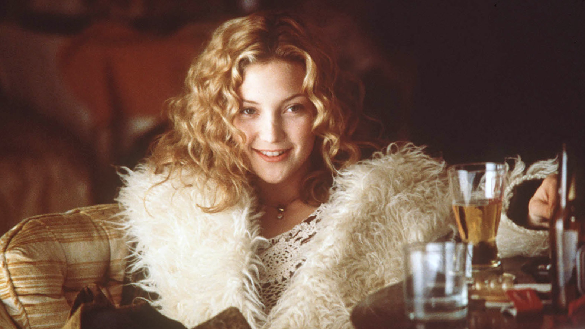
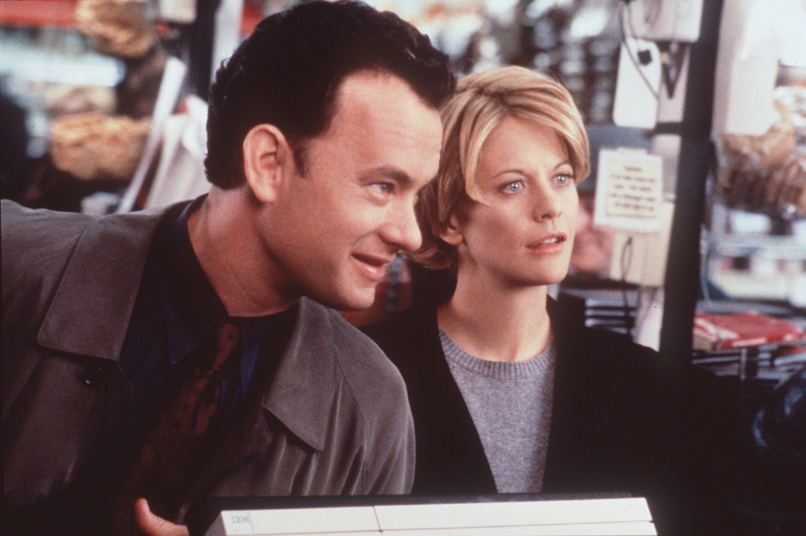
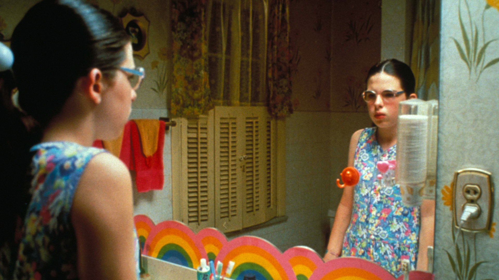
Bienvenida a la casa de muñecas: otra vez un balance de fin de año que no incluye pareja
8 de diciembre de 2017
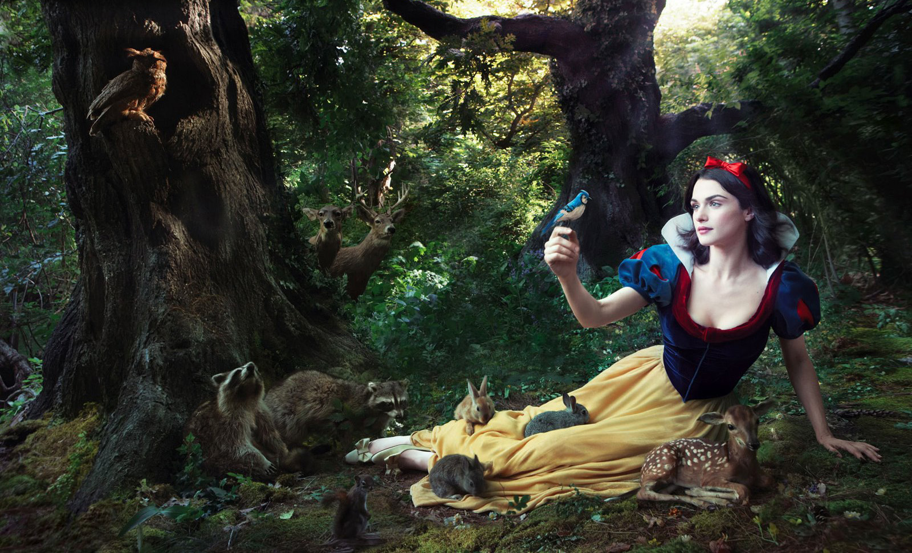
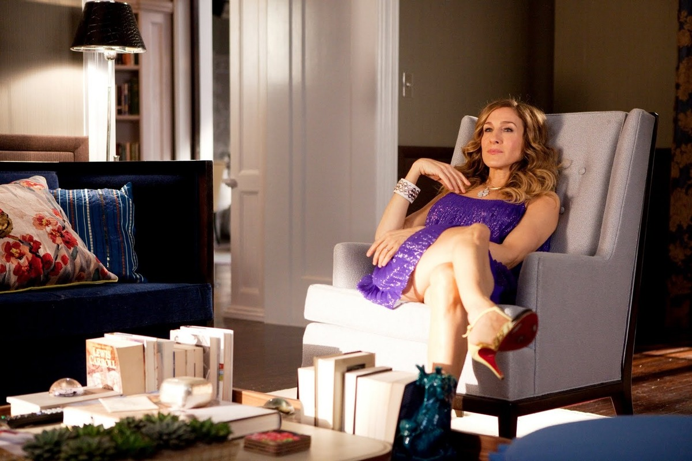
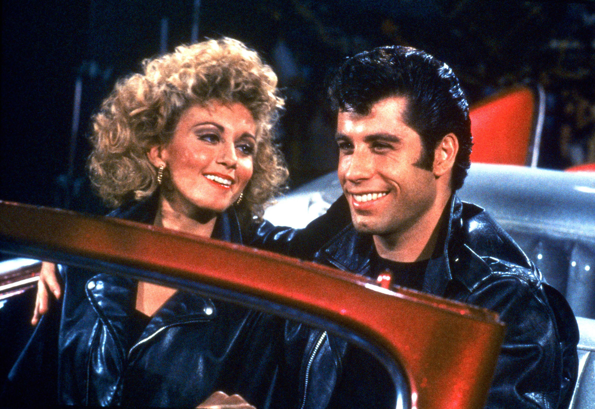
Como especialista en música hecha por mujeres/ #ChicasPower
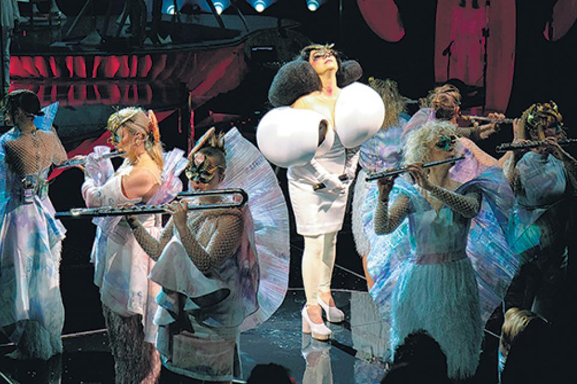
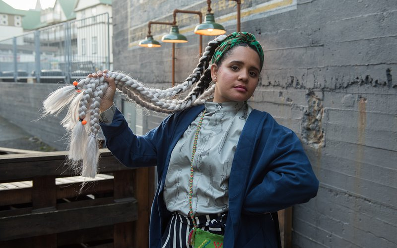
Entrevistas a mujeres fuertes y espirituales
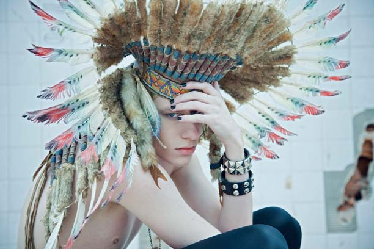
"Me siento una fusión entre artista y astróloga": Antonella Arismendi
15 de abril de 2013. Malevamag
Otros artículos de opinión, sobre la estética de la intimidad
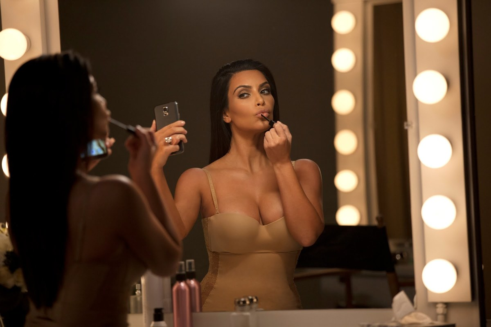
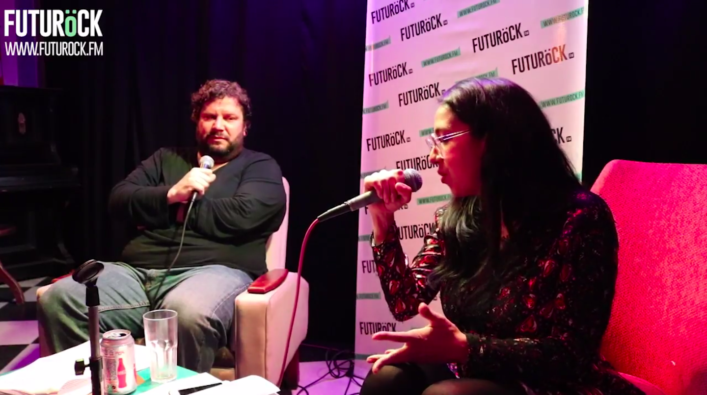